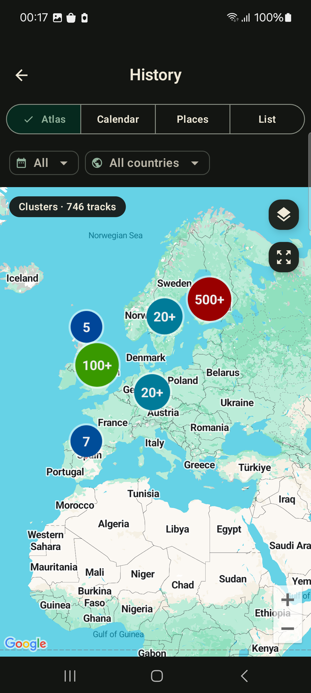

GPX import tutorial
How to import GPX files on Android — bulk ZIP backups and big collections
Have years of GPX tracks sitting in a folder or an old app? GPS Logger imports them on Android in one pass — pick many .gpx files at once, or hand it a single ZIP backup and every route inside lands in your history, calendar and personal atlas. It works for flat archives and for collections sorted into folders, re-import is safe, and there is zero lock-in.

Quick answer
Open GPS Logger → History → menu → Import GPX, then choose your .gpx files or a ZIP backup and start. A ZIP can hold hundreds of tracks; they are read one by one, each track segment becomes its own journey, and any track already in your history is skipped so you never get duplicates.
1. Install GPS Logger
Install GPS Logger: Private Tracker from Google Play. No account or sign-in is needed to import or view your tracks — everything is processed and stored on your phone.
2. Gather your GPX files
GPX (GPS Exchange Format) is the universal route file written by almost every GPS app and device. Your collection might come from:
- An all-history export from another GPS logger or tracker app
- A bulk download from Strava, Garmin Connect, Wikiloc, Komoot or OsmAnd
- Old handheld GPS exports (Garmin eTrex, GPSMAP and similar)
- A backup ZIP you previously made with GPS Logger itself
Drop the files (or the ZIP) somewhere Android can reach — internal storage, Downloads, Google Drive or any cloud provider that shows up in the file picker.
3. Open the GPX import screen
In GPS Logger, go to the History tab, open the overflow menu and choose Import GPX. The screen explains what it accepts and shows an option to optimize very detailed tracks.
4. Pick files or a ZIP backup
Tap Choose files. From here you can either:
- Select multiple
.gpxfiles at once — long-press, then tap to add each one. - Select a single ZIP archive — every
.gpxinside is imported automatically.
5. Large collections: zip the folder
For people with big, organised libraries — hundreds or thousands of routes — the ZIP route is by far the fastest. The importer reads every GPX entry inside an archive whether the files are:
- Flat — all
.gpxfiles sitting at the top level of the ZIP, or - Structured — sorted into subfolders by year, country, activity or device (for example
2023/spain/coast-walk.gpx).
So if your tracks live in a tidy folder tree on a computer, just compress the top folder into a single .zip, copy it to your phone, and import that one file. No need to flatten or rename anything first.
6. Start the import
Tap Import. A progress bar counts files and tracks as they are added. A few things happen automatically as it runs:
- Duplicate-safe. Tracks are matched by start time, so re-importing the same backup — or running an import again after adding new files — never creates duplicates.
- Smart splitting. Exports that concatenate many days into one long segment are split back into one journey per day, so a multi-day Garmin file doesn't become a single tangled line.
- Resilient. If one file inside a ZIP is corrupted, it's reported and skipped — the rest of the archive still imports.
- Optional optimize. Extremely dense tracks can be simplified to save space; leave it on for big libraries, or switch it off to keep every point.
7. Review your imported atlas
When it finishes you'll see how many tracks and points were added. Imported routes immediately appear in your history list, on the calendar, in the lifetime map, and in the places and countries atlas — turning a pile of files into a browsable map of everywhere you've been. Each track shows distance, duration, speed and elevation, with a detected activity type.
No lock-in, ever
Importing into GPS Logger doesn't trap your data. Everything is stored locally and privately, and you can export any track back to GPX or KML — or make a full-history GPX ZIP backup — whenever you like. It's safe to try: bring your collection in, look around, and you can always take it out again.
Test before moving a whole library
You can test import with a small GPX file first, confirm your files load correctly, and then move a larger collection when you are ready. The app shows any current import limits before you start.
Frequently asked questions
Can I import multiple GPX files at once?
Yes — select as many .gpx files as you want in the file picker, or import a single ZIP that contains them all.
Does it work with a ZIP of folders?
Yes. Flat archives and ZIPs organised into subfolders both work; every GPX entry is found regardless of its folder path inside the archive.
What if my export bundles many trips into one file?
The importer detects large jumps and long time gaps and splits the data into separate journeys, so your history stays clean.
Will it overwrite tracks I recorded in the app?
No. Import only adds new tracks and skips anything that's already present by start time.